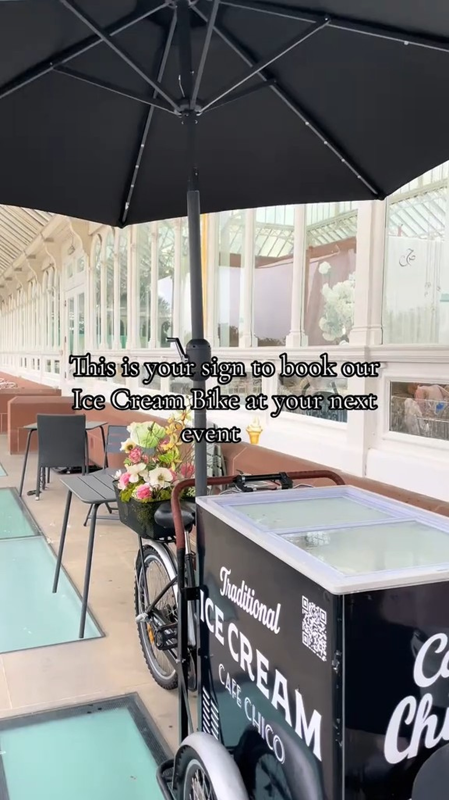
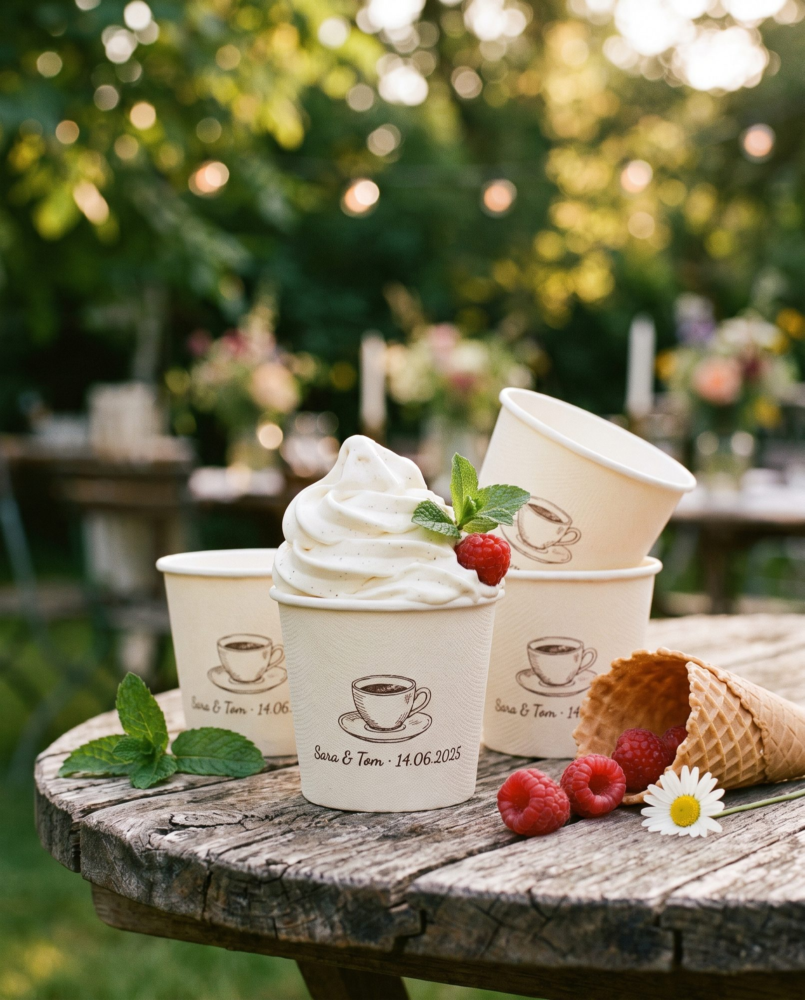

For hire · Greater Manchester
A 1950s three-wheeler scooping at your wedding, party or summer day across Greater Manchester. We roll up, set up, and serve up to 80 scoops — five flavours on the bike, every time.
Enquire
What we make
We don't do soft-serve. We scoop real Irish dairy ice cream from Walling's — the family dairy in Armagh, churning the way their grandfather did. Creamy, slow-churned, proper stuff. You taste the difference on the first lick.
On the bike, every day
Mint choc chip · Lotus · Nutella · Salted caramel — ask what's on the day.
How you take it
The classic — crisp, golden, that first bite of cone everyone secretly wants more of.
Waffle cone dunked in real chocolate, set firm. Sticky fingers guaranteed.
For the kids. For the grown-ups who don't trust themselves with a cone. Easy, no drips.
Waffle cone rolled in rainbow sprinkles. Yes, even the adults. Especially the adults.
Sauces & toppings
A self-serve topping table — drizzle, crunch, sprinkle. Pick what you like. Ask the scooper if you want a recommendation.
What's on the table varies — ask when we set up. Vegan options always available.
Pricing
Up to 50 guests
£350
Up to 100 guests
£470
Up to 150 guests
£570
Up to 200 guests
£680
Up to 250 guests
£780
Up to 300 guests
£870
Baseline includes 2 hours of serving, 80 scoops, and a 10-mile radius from Bolton. Final quote tailored to your date, venue and headcount.
Extra hour
£120
Stack as many as you need
Beyond 10 mi
£1.50/mi
Quoted up front, no surprises
Custom flavour · £60 · Dairy-free sorbet · £40 · Branded cups · from £35
Pricing proposed by Studio Nestir as a working draft. Owner to confirm before going live.
How it works
Date, venue, headcount. 24-hour reply.
30 min before, we set up the bike.
Up to 80 servings. We clear up after.
A little extra

Paper cups printed with your name, your date, or a one-liner. Pick the colour. From £35 for the run — perfect for a wedding, christening or 40th.
Cadbury Flake, fresh berries, crushed Oreo — laid out on the bike for guests to top their own. From £0.50 per scoop served.
Your name, your date, your one-liner — printed on a chocolate disc, set on top of the scoop. From £1.50 per scoop.
Email or call. 24-hour reply.